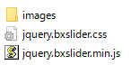

では、ここからは実際にサイトを作ってみましょう。
まずはスライドショーの実装に挑戦です！
今回スライドショーの実装に使うjQueryのプラグインは『bxSlider』です。
当サイトのメニューの『jQueryについて』→『jQueryプラグイン一部紹介』にも掲載しています。
まずは『bxSlider』を用意しましょう。
http://bxslider.com/へアクセスしてください。
アクセスするとページ上に『
クリックするとファイルのダウンロードが開始されます。
ダウンロードが終わり次第、ZIPファイルを展開し次のファイルだけを取り出しましょう。
取り出したファイルは各フォルダに移しておきましょう。
『jquery.bxslider.css』ファイル
『jquery.bxslider.min.js』ファイル
『images』フォルダ
次に『
<script type="text/javascript"
src="../js/jquery.bxslider.min.js">
</script>
<link href="../css/jquery.bxslider.css"
rel="stylesheet"/>
次に『
$(document).ready(function(){
$('.bxslider').bxSlider({
auto: true, //自動遷移を有効にする
mode:'fade', //スライドモードを指定する
pause:4000, //自動遷移の間隔を指定する
});
});
次に『
<p class="resizeimage">
<ul class="bxslider">
<li><img src="../Photo/画像1.jpg"></li>
<li><img src="../Photo/画像2.jpg"></li>
<li><img src="../Photo/画像3.jpg"></li>
</ul>
</p>
次に『
ul.bxslider ,
ul.bxslider li {
margin:0;
padding:0;
}
p.resizeimage img { width: 100%; }
//ウインドウ幅に合わせて画像サイズを変化させる
これでスライドショーを導入することができました。次の段階へ行ってみましょう！